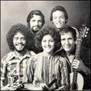

Canción de noviembre
“Verde luz”
Haciendo punto en otro son
Canción de noviembre
“Verde luz”
Haciendo punto en otro son


Verde luz de monte y mar
Isla virgen del coral
Si me ausento de tus playas rumorosas
si me alejo de tus palmas silenciosas
quiero volver, quiero volver
a sentir la tibia arena
a dormir en tus riberas
Isla mía, flor cautiva
para ti quiero tener
libre tu cielo, sola tu estrella
isla doncella quiero tener
Verde luz de monte y mar
Gramática: posesivo 所有形
スペイン語の所有形には２つの系統があります。一つは名詞の前につける形、そしてもう一つは名詞の後ろにつける形です。一般には前者の形を使うことが多く、後者の形は、詩的に聞こえるという違いがあります。
前者は次のようになります。
mi estrella nuestra estrella mis estrellas nuestras estrellas
tu estrella vuestra estrella tus estrellas vuestras estrellas
su estrella su estrella sus estrellas sus estrellas
後者は次のようになります。
isla mía isla nuestra islas mías islas nuestras
isla tuya isla vuestra islas tuyas islas vuestras
isla suya isla suya islas suyas islas suyas
Green light of mountain and sea
Virgin island of coral
If I am absent from your murmurous beaches
if I am away from your silent palms
I want again, I want again
to feel the lukewarm sand
to sleep on your shores
My island, captive flower
for you I want to have
your sky free, your star alone
virgin island I want to have
Green light of mountain and sea
Letra de la canción:
Expresión: verde luz
スペイン語の形容詞は普通は名詞の後ろに置きます。ここで “verde” は「緑色の」という形容詞、 “luz” は「光」という名詞ですから、普通には “luz verde” となるわけです。 “luz verde” (green light) は英語と同様に、単純に「緑色の光」という意味のほかに、「青信号」という意味にもなります。これが、語順を変えて形容詞を名詞の前に持ってくると、何かしら特別の意図が込められることになります。この歌詞でも、 “verde luz” というのは単純な緑色の光では勿論なく、「太陽に照らされて輝く、島の青々とした緑の山や木々」を表しています。
ところで「緑の木々」を「青々とした」と表現する日本語も面白いですね。余談ですが、これは日本語の「青」が、 “blue” 以外の色も含んだ概念だということを示しています。
